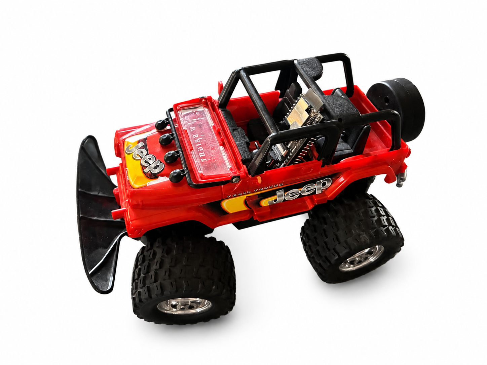

Project Overview
Jeep is an ongoing robotics project based on an old toy that I modified and repurposed using an ESP32 WROVER Module.
The goal of this project is to transform a simple toy vehicle into a Wi-Fi controlled rover with steering, traction control, and a live onboard camera view.
Image

Control System
The Jeep is controlled through a local web interface created by the ESP32. By connecting to the ESP32 over Wi-Fi, I can access a local webpage that works as a remote controller for the vehicle.
From this interface, I can control both steering and traction. These functions are managed through a TB6612FNG motor driver, which controls the motors responsible for movement and direction.
Camera System
A second local webpage is used to display the live video stream from the onboard camera. The camera is positioned in the driver’s seat area, making the experience more realistic and giving the impression of seeing the environment from inside the Jeep.
Main Components
- Repurposed toy Jeep body
- ESP32 WROVER Module
- TB6612FNG motor driver
- Wi-Fi based local control webpage
- Second local webpage for live camera view
- Onboard camera positioned in the driver’s seat area
Current Development
This project is still in progress. The next step is to make the camera rotate using a servo motor, so that the user can look around remotely while driving the Jeep.
This would make the system more interactive and would improve the realism of the onboard driving experience.
What I Am Learning
Through this project, I am experimenting with ESP32-based robotics, Wi-Fi control interfaces, motor driver integration, and live camera streaming. It is also a good example of how old objects can be reused and transformed into functional robotic prototypes.